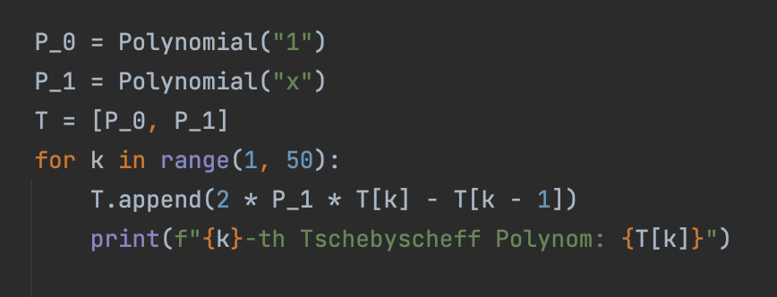
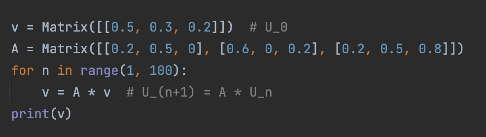

Avec notre code, il est possible de faire beaucoup plus. Ce qui est bien, c'est que l'on peut travailler de manière beaucoup plus précise et utiliser des méthodes comme les boucles for et les requêtes if. On peut par exemple définir une suite de polynômes, par exemple les polynômes de Tchebbycheff, en calculant une suite récursive. Pour une suite de fonctions, on peut étudier leurs intégrales afin d'en apprendre davantage sur la suite. Il est également possible d'étudier des événements aléatoires, par exemple la norme moyenne des valeurs propres de matrices avec une certaine distribution d'entrées ou autres. Pour les questions de convergence et de stabilité, on peut recourir à notre programme. Si l'on se demande dans quelle mesure un algorithme converge vers une solution, on peut utiliser notre programme pour déterminer la solution et étudier la convergence ! Il n'y a pratiquement pas de limites, c'est pourquoi il vaut vraiment la peine de travailler avec notre module pour un travail avancé !
Für ein genaues Verständnis der Funktionen vom Modul kann man unseren Code lesen, jedoch empfiehlt sich diese Liste einfach durchzulesen/in dieser Liste nachzuschlagen.
| Expression | Fonction | Exemple |
|---|---|---|
| Function(f(x)) | Définie une fonction | f = Function("sin(x^2-1)") |
| Polynom("a_n*x^n + ... + a_0") | Défini un polynôme | P = Polynom("x^4 -3x^2 -1x +2") |
| Matrix([[a_11,...,a_1n],...,[a_n1,...,a_nn]]) | Défini une matrice | A = Matrix([[1,2,3],[4,2,1],[0,0.1,18]) |
Ces classes ont beaucoup de fonctions. On peut par exemple tous les afficher: print(A).
| Expressions | Functions | Exemples |
|---|---|---|
| cos, arccos, cosh, arccosh, sin, arcsin, sinh, arcsinh, tan, arctan, tanh, arctanh |
Opérateurs élementairs | cos(pi) |
| exp(x) ou e^x | Exponentialfunktion | e^4 |
| pow(a, b), a^b ou a**b | Puissance | pow(3, 7), 3^7, 3**7 |
| sqrt(x) ou root(x, n) | Fonction racine | sqrt(2), root(18, 5) |
| ln(x) | logarithme népérien | ln(2) |
| log(x, n) | logarithme (de base n) de x | log(10, 2) |
| min(f, a, b), max(f, a, b) | Minimum/Maximum de f sur [a;b]. f peut être un objet de Function(), ou être un string. |
min(sin^2(x) - cos(5*x), 0.5, 0.7) |
| racines(f, a, b) | racines de f sur [a; b] | racines(x^3-x*sin(x),0,2) |
| riemann(a, b, f(x), x), trapez(a, b, f(x), x) oder simpson(a, b, f(x), x) |
Integral de f sur [a; b] avec x comme variable. | trapez(3,4,ln(x)/x,x) |
| d/dx(f(x)) | Dérivée de f(x). | d/dx(sqrt(1-cos(x)^2)) |
| d^n/dx^n(f(x)) | Dérivée exacte de f(x). | d^3/dx^3(ln(sin(x)^2 + 1)) |
| d^n/dx^n(f(x))(x_0) | Dérivée approximative de f(x) en x_0. | d^3/dx^3(sin(exp(x^2 - 4)))(5) |
Voici un exemple d'application de cette classe :
Supposons que nous ayons un problème de physique dans lequel nous devons calculer une intégrale, dont la valeur exacte ne peut pas être déterminée, car l'intégrale n'est pas élémentaire. Dans ce cas, nous pouvons facilement la calculer.
On peut aussi résoudre des equations différentielles. Pour cela la fonction: euler_collatz(f(t,y),t_0,y_0,t_ende).
Pour l'équation y' = 9.8*y^2 - sin(t*y) avec y(0)=3 on pourrait chercher y(1).
Pour cela, on peut écrire:

Les suites de fonctions peuvent également être simple à analyser!
| Expression | Fonction | Exemple |
|---|---|---|
| +,-,*, ^n | Opérations élémentaires | P = Q^2 - R^2, Q et R sont des objets de Matrix |
| f.derivative() | Dérivée exacte | P = Q.derivative() |
| f.nullstellen() | Racine approximatives | L = P.nullstellen() |
| neville([[x_0,y_0],...,[x_n,y_n]] | Trouve un polynôme qui passe par ces points | P = neville([[1,3],[4,7],[6,-2],[7,1]) |
Voici un exemple de programme pour calculer récursivement les premières fonctions de Chebyshev:
| Expressions | Fonctions |
|---|---|
| +, -, *, ^n | Operations élementaires |
| inverse(A) | La matrice inverse de A |
| T(A) | La matrice transposée de A |
| det(A) | Le déterminant de A |
| Eigenvalues(A) | Permet de calculer les valeurs propres complexes. Pour les matrices symétriques, on utilise la méthode de Jacobi. Sinon, nous utilisons une transformation en forme Hesseberg pour effectuer la méthode QR avec efficacité, en utilisant des rotations de Givens. |
| LU(A) | Calcule, si possible, la décomposition LU: A = LU. L est une matrice inférieure triangulaire normée, U une matrice supérieure triangulaire. |
| QR(A) | Calcule pour toute matrice la décomposition QR: A = QR Q est une matrice orthogonale et R une matrice triangulaire de dimension n x m. |
| Cholesky(A) | Pour une matrice A, symétrique et définie positive, on décompose en Cholesky: A = L*L^T L est une matrice inférieure. |
| LU | Trouve la solution à LUx=b, en calculant y tel que Ly=b, puis x avec Ux=y. |
| Cholesky | Comme pour la décomposition LU. |
| Gauss | Avec des opérations sur les lignes de A, on transforme A en Id. Ces opérations sont appliquées sur b pour résoudre Ax=b |
| Ausgleichsproblem | Régression linéaire: Quand Ax=b a trop de contraintes, il n'y a pas de solution. Or il existe un x tel que Ax-b a une norme minimale. Cette fonction calcule cet x, ce qui est utile pour interpoler en physique et cetera. |
Voici un autre exemple de fonction avec des matrices. Si un problème probalistique est représenté par des nombres discrets de temps n et des vecteurs u_n avec u_(n+1)=A*u_n, on peut chercher la valeur u_100. A la main, cela serait impossible, mais a l'aide d'petit script, cela ne prendrait que quelques lignes :
